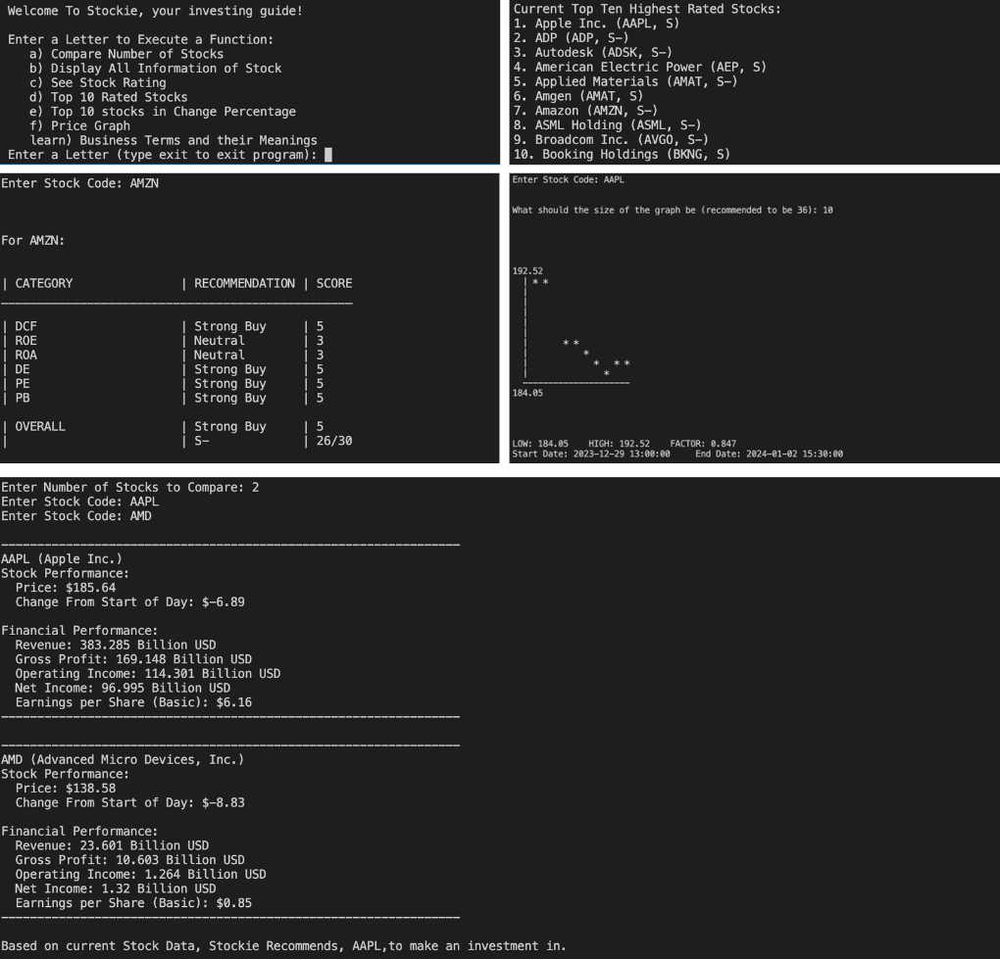

Stockie
A tool to increase efficiency for stock brokers and novice investors alike.
Stockie simplifies the investing experience, by showing you the information you need and want in a clear and
concise manner. The top 10 stocks and compare stocks feature helps you decide what to invest in! Through
using a live stock data API, users get real time, extremely accurate data and suggestions!

C++, API
View on
GitHub
This Website!
My personal portfolio website that showcases who I am, the
software/engineering projects I have done, and my software/engineering experience
HTML, CSS, JavaScript
View on
GitHub
BumpSense Technologies
"Bumpsense" is a device that attaches to any car and has the purpose of
sensing and automatically avoiding road obstacles such as potholes, bumps, and more, as these may pose
serious risk to damaging ones car. Also, for proof of concept, I created a prototype using 3D printed parts,
an arduino, and additional electrical components, as well as a report on the company, device, target market,
financials, and more

Arduino, Sensors, Motors, C++, AutoDesk Inventor (CAD)
View BumpSense Company Report
CoCo (Connect with Companies)
App that makes the job application process much easier. In CoCo, both
applicants and employers create personal profiles and who they are and what they are looking for. Based on
this, CoCo's algorithm automatically matches similar profiles with each other. Then, from there, employers
can view their matches, and easily message or request an interview with the applicant. CoCo has both a
sign-in system and an internal message system, allowing the whole job application process to conveniently
take place within CoCo!
C++, JSON
View on
GitHub
Indigenous Awareness Site
Site to spread indigenous awareness through using art and animation!

Python, Turtle
View on
GitHub
Chef Safety Device
A device that protects chefs in the event of a build-up of smoke and a fire
within their kitchen. The device has a fan which spins faster the more smoke/fog there is (when light is
low, fan spins faster). It also comes equipped with LED indictors to dictate the status of the device, smoke
and separate fire sensor which triggers a buzzer when it detects smoke/fire, and auto-switch which turns the
device on when the chef enters the room and off when the chef leaves the room.
IC Chips (555, L293D, etc), Breadboards, Sensors, More PC Components
👲💻
Technology Learning Application
Interactive learning application to teach and educate consumers on upcoming
technologies, so they can be aware and start to get ahead on it. The high interactivity (many mini games
like jeopardy) makes users excited to learn and helps them retain the information. At the end of the course,
users are rewarded with a personalized certification for completing the course successfully.

Python, Tkinter
View on
GitHub
Youtube UI Clone
A website that mimics the UI of Youtube. I created because it was a way for
me to practise and enhance my HTML and CSS skills.
HTML, CSS
View on
GitHub
Medical Sterilization Container
A container that securely houses a surgeons tool (bone saw) while it goes
through the sterilization process within an autoclave. The design mimcs the bone saw so that it is firmly
held and cost/resource use is minimized. It also many holes to facilitate sterilization by the steam within
the autoclave.

Autodesk Inventor (CAD), Prusa 3D Printer, PrusaSlicer, G-CODE, STL Files
Download Autodesk Inventor (CAD) Assembly File